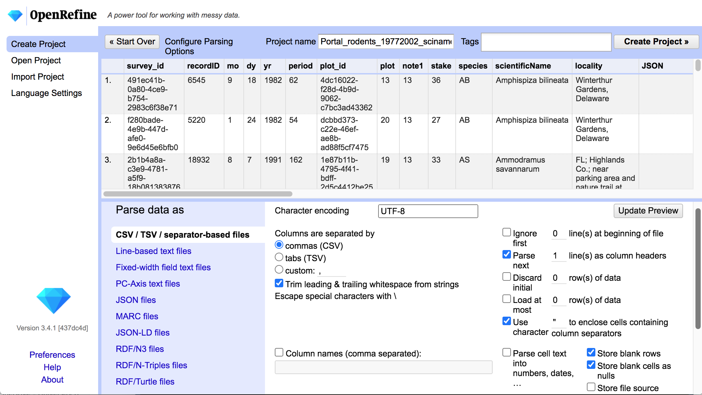

Syllabus
Intro
- What is OpenRefine? OpenRefine is a free, open-source tool for cleaning data:
- Correcting errors by hand is easy for small datasets, but:
- more tedious for larger datasets
- harder to find in larger datasets
- reproducing corrections to other datasets is challenging!
- Correcting errors by hand is easy for small datasets, but:
- OpenRefine is NOT for:
- very large datasets (e.g. > 1 million rows)
- complicated calculations (e.g. numerical simulations involving tabular data)
- non-tabular data; though it can handle other forms of untidy data:
- variables in rows
- multiple values in a single row or column
- values in multiple rows or columns)
- Learning Outcomes By the end of the workshop, participants will be able to:
- load and examine data in OpenRefine
- save and re-open OpenRefine projects
- use clustering and transforms to correct data errors
- export data cleaning steps as scripts
Introduction to OpenRefine
- Basic Workflow
- Download from https://openrefine.org/download.html
- OpenRefine runs in your web browser:
- starting the application should open a browser window
- if not, navigate to http://127.0.0.1:3333/ once the app is running
- OpenRefine does NOT modify the original data
- Workflow steps
- load your data or an existing project
- do your data cleaning tasks
- OpenRefine does not modify your data files!
- Get work out by:
- saving project
- exporting data
- exporting data cleaning script
- Importing Data
- OpenRefine can import most tabular data formats:
- tab-separated values, comma-separated values, custom separators
- excel spreadsheets (
.xls,.xlsx) - many others
- check settings on import preview
- OpenRefine can import most tabular data formats:
- Import Preview 
- Saving and Loading Projects

- DEMO
- Explore Distributions

- DEMO
Basic Error Correction
- Categorical Variables
- data values might have typos and/or other errors
- How do you detect and fix these errors?
- directly edit the labels in Facet mode
- use ‘Cluster’ options to group similar category labels
- DEMO
- Column Transformations
- re-order / re-name columns
- merge or split columns (by certain separators)

- Value Transformations
- convert types
- common edits (converting case, removing whitespace, etc.)
- fill in empty cells if they represent repeated values from above
- generic scripting language (General Refine Expression Language)
- DEMO
Saving Data Cleaning Steps
- Reproducibility
- OpenRefine records all data transformation steps
-
Undo/Redoallows you to select different stages of processing to revert to -
Extractallows you to export the transformation steps in JSON format -
Applyallows you to re-use a set of transformations from JSON format
- DEMO
- Summary OpenRefine has a lot of functionality:
- simple interface for data cleaning
- syntax for doing data transformations
- reproducible processing workflows
- lots of online examples and extensions